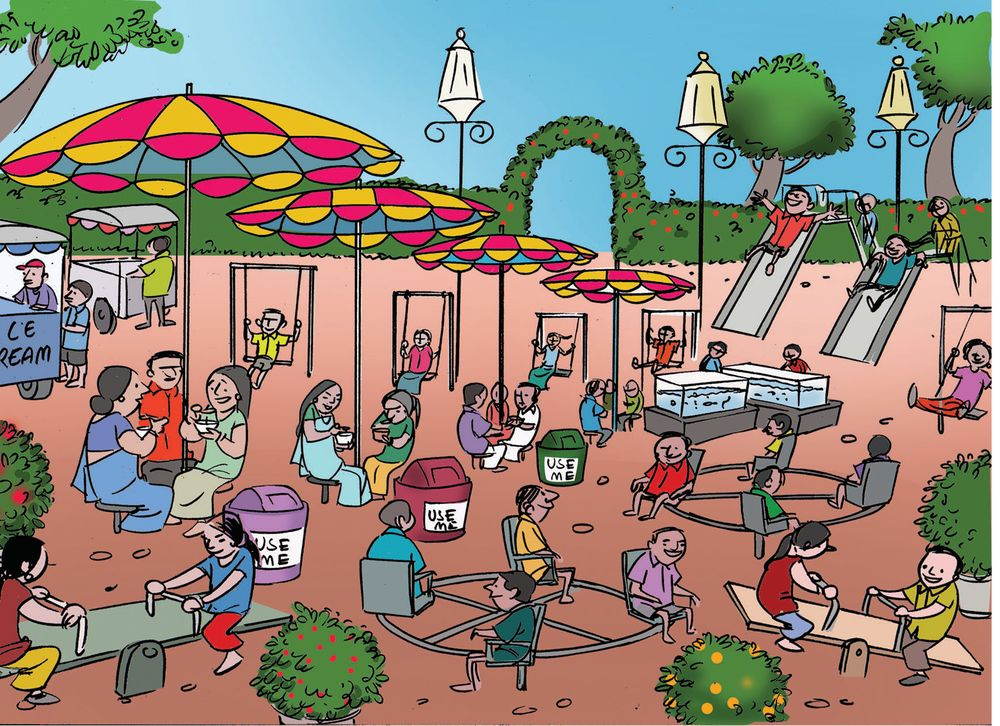

National Games
Whose picture is this?
Ammu is the mascot of the 35th
National games of India, held in
Kerala in 2015.
Now look at the table below:
It shows the top five teams and the
number of medals they won.
No.
Team
Gold
Silver
Bronze
1
Services
91
33
35
2
Kerala
54
48
60
3
Haryana
40
40
27
4
Maharashtra
30
43
50
5
Punjab
27
34
32
Which team won the most number of gold medals?
Which team won the most number of medals?
Make some questions like this.
145
Page 66
Figure fig_ch05_p066_01 (Page 66)
The Kerala team was best in athletics. See how Appu listed the first
four in athletics.
$
No.
Team
Gold
Silver
Bronze
1
Kerala
9
10
8
2
Services
7
1
5
3
Punjab
5
5
5
4
Uttar Pradesh
3
5
2
Which team won more than five gold medals?
Which teams won more silver medals than gold medals?
Cant you make some more questions?
Exams
Look at the grades Appus class got in the math exam.
No.
Name
Grade
No.
Name
Grade
1
Aparna
A
11
Akshaya
A
2
Appu
B
12
Ashwathy
B
3
John
C
13
Theertha
A
4
Ijaz
C
14
Anju
B
5
Mithila
A
15
Sarang
B
6
Adityan
B
16
Anujith
C
7
Jose
B
17
Mahesh
A
8
Irfan
B
18
Fasna
B
9
Lissy
D
19
Nada
C
10
Jasna
C
20
Sreekkuttan
A
How many got A grade?
How many got B?
How many got C?
How many got D?
Lets make a table to show the number of children who got each grade.
146
Page 67
Figure fig_ch05_p067_01 (Page 67)
Grade
Number of children
A
B
C
D
E
How many got B grade or higher?
How many got D or lower?
Make more questions.
Comparison
The tables below show the grades of children on Appus bench and
Theerthas bench.
Name
Malayalam
English
EVS
Maths
Appu
A
A
A
B
Sreekkuttan
A
A
A
A
Mahesh
A
B
B
A
Sarang
A
A
B
B
Jose
A
B
A
B
Name
Malayalam
English
EVS
Maths
Theertha
A
A
A
A
Athira
A
A
A
B
Anju
A
B
A
A
Fasna
A
B
A
B
Mithila
A
A
A
A
Lets compare them
Who all on Appus bench got A grade in all subjects?
147
Page 68
Figure fig_ch05_p068_01 (Page 68)

Figure fig_ch05_p068_02 (Page 68)
Which are the subjects in which all children on Theerthas bench
got A grade?
Find the number of children on each bench who got A grade in all
subjects. On whose bench is this more?
School trip
Children of class 4 went on an educational trip.18 from A division,12 from B, 15 each from C and D. Make a table showing the
divisions and the number of children from each.
In the park
Appu and his friends are in the park. Beautiful sights all around!
What all things do you see in the picture?
How many of each?
Fill in this table:
Things I saw
Number
Colourful umbrella
Aquarium
Swing
Colour math
What Theertha liked most in the park was the
colourful umbrella.What are the colours in them?
Have you seen a rainbow?
How many colours does it have?
Which colour do you like most?
What about your friends?
The table below shows the number of children in Nafias
class who like each colour in a rainbow.
Colour
Number
V
4
I
2
B
5
G
3
Y
4
O
3
R
4
Which colour do most
children in Nafias class like?
Make a table like this for your
own class.
Class one
The table shows the number of children who joined class 1 in the 6 LP
schools of Thirukulam panchayat. (one child in the picture stands for
10 children).
Boys
Girls
Kozhimala LP school
Vadapuram LP school
Mamallapuram LP school
Pathanakulam LP school
Palathira LP school
Thirumala LP school
How many children are in all?
ÿ
Who are more, girls or boys?
How many more?
In which school did the most number of children join?
How many?
The least?
The panchayat decided to give free slates for all these kids.
Draw slates in the table to show the number needed in each school, the
picture of one slate indicating 10 actual slates.
School